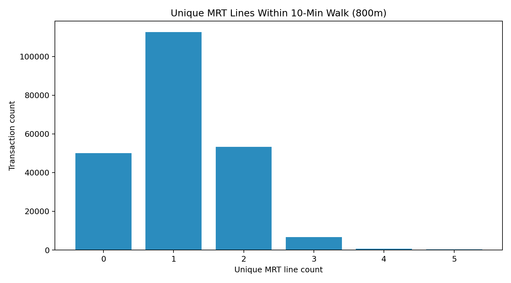

Technical Report: Estimating the HDB Resale Price Effect of Proximity to Oversubscribed Primary Schools
1. Context
Housing demand in Singapore is strongly shaped by access to public amenities, and school access has become a recurring policy and public concern. In practice, households often treat proximity to competitive primary schools as a key criterion when selecting resale flats. From a Ministry of National Development (MND) perspective, this creates a practical policy question: how much of observed resale price variation is associated with school-access effects, and how much is explained by other structural and accessibility factors.
This project was initiated to support that question with an auditable, data-driven workflow. The objective is not only predictive performance, but also policy interpretability: if we quantify a school-access premium, we need to understand when it appears, where it appears, and whether it remains after controlling for confounders.
The implementation evolved across branches in the repository:
| Branch | Role in project |
|---|---|
main / webscraper |
Initial MOE school-data scraping setup |
Web_Crawler |
Crawler refinements for school-vacancy/balloting extraction |
Data-Preprocessing |
Geospatial integration and feature engineering pipeline |
Hedonic-Model |
Hedonic regression, boundary RDD, and town-level heterogeneous-effect analysis |
Within Data-Preprocessing, the core geospatial workflow is implemented in:
primary_boundaries/join_primary_schools_to_ura_landuse.pyprimary_boundaries/build_resale_flat_school_dataset_onemaps.py
Within Hedonic-Model, model estimation is implemented in:
hedonic_model/train_hedonic_model.pyhedonic_model/run_school_boundary_rdd.pyhedonic_model/run_town_premium_models.py
In short, the project has moved from raw collection, to geospatial feature construction, to econometric and predictive analyses designed for policy interpretation.
2. Scope
2.1 Problem
The business problem is to quantify the resale-price association with school accessibility while minimizing false attribution from correlated neighborhood features. If this is not done carefully, MND may overestimate the value of “good school” proximity and underweight other drivers such as transport access, unit attributes, and town-level market dynamics.
The modelling sample used in the current pipeline contains 223,550 resale transactions (from 2017-01 to 2026-03) across 26 towns and 7 flat types, after geospatial matching and filtering to valid HDB polygons. Relative to the raw resale file (226,471 rows), 2,921 rows are excluded due to geocode/matching constraints.
2.2 Success Criteria
Success criteria are defined at both business and operational levels.
Business-facing criteria
- Produce an interpretable estimate of school-proximity effect size that can be translated into approximate SGD premium ranges, rather than only model metrics.
- Identify heterogeneity: whether the estimated premium is consistent across towns or concentrated in specific submarkets.
- Provide evidence for policy use cases such as prioritizing monitoring efforts, stress-testing school-boundary narratives, and communicating uncertainty clearly.
Operational criteria
- Build a reproducible geospatial feature pipeline from raw source layers to transaction-level model table.
- Keep the pipeline resilient for long-running routing workloads (chunked processing, resumability, append-safe outputs).
- Ensure code traceability by branch and script, with machine-generated outputs for inspection.
2.3 Assumptions
This report and the current implementation rely on a set of material assumptions.
First, “good school” is operationalized as the top 59 schools by overall subscription pressure (applicants/vacancies), based on the curated output good_primary_schools.csv. This is a defensible but not unique definition; changing the threshold or ranking criterion will change treatment intensity.
Second, school influence is approximated through polygon-intersection logic between HDB building polygons and school buffers (1 km and 2 km Euclidean buffers). This treats school exposure as a spatial market signal, not an administrative eligibility guarantee.
Third, transaction location is represented by geocoded address points matched to HDB polygons rather than exact unit-level coordinates. This introduces measurement error in boundary-near analyses, particularly for local designs.
Fourth, in the optimized OneMap routing pipeline, OneMap API calls are reserved for nearest-distance fields while threshold-count fields use Euclidean approximations for tractability. This is an intentional engineering trade-off between route realism and quota/runtime constraints.
Finally, causal interpretation remains conditional. The baseline hedonic and local boundary designs reduce confounding but do not fully eliminate selection effects related to household sorting.
3. Methodology
3.1 Technical Assumptions
The project separates conceptual assumptions (Section 2.3) from technical assumptions that govern implementation.
Spatial layers are normalized to WGS84 for ingestion and projected to SVY21 (EPSG:3414) where meter-based operations are required. This ensures consistent buffering and distance logic.
School boundaries are constructed by joining school points to URA master-plan land-use polygons, with de-duplication rules for repeated URA object IDs. From these cleaned polygons, 1 km and 2 km Euclidean buffers are generated.
For routing features, the OneMap implementation uses candidate pre-filtering by Euclidean radius and nearest-candidate cap (k). The latest optimization keeps OneMap calls for nearest mall/MRT distances while computing 10-minute counts from Euclidean thresholds. Additional deduplication groups repeated origin coordinates to reduce repeated API calls.
Model-side, resale price is modeled as log(resale_price) to stabilize variance and permit approximate percentage interpretation through exp(beta)-1. Time effects are absorbed through month fixed effects, and location effects through town fixed effects in OLS specifications.
3.2 Data
The pipeline integrates transactional, geospatial, and amenity datasets.
| Data source | Role in pipeline | Key outputs |
|---|---|---|
HDB resale transactions (2017+) |
Target variable and structural covariates | resale_flats_with_school_buffer_counts_onemap.csv |
| School location and subscription data | Good-school definition and school exposure features | good_primary_schools.csv, overall_subscription_rates.csv |
| URA Master Plan land use | Spatial entity assignment for school points | primary_school_boundaries*.geojson |
| HDB existing building polygons | Polygon matching and exposure transfer | resale_address_points_matched_with_school_counts_onemap.geojson |
| Mall points and MRT exits | Accessibility covariates | shopping_centres_points.geojson, mrt_exits_tagged_with_lines.geojson |
| OneMap routing API | Walking distance for nearest mall/MRT fields | resale_flats_with_school_buffer_counts_onemap.csv |
Current geospatial coverage statistics in the generated artifacts:
- Total schools in subscription table:
179 - “Good schools” selected:
59 - Shopping centres mapped:
155 - MRT exits tagged:
597 - HDB polygons loaded:
13,386 - Resale address points matched to HDB polygons:
9,568 - Unmatched address points:
28
3.3 Experimental Design
The experimental workflow has two layers: feature engineering and modelling.
At feature-engineering level, the sequence is:
- Build school-boundary entities by joining school points to URA polygons.
- Construct 1 km and 2 km school buffers and classify school tier.
- Match resale address points to HDB polygons.
- For each polygon-linked address, compute school exposure counts (
school_count_*,good_school_count_*) by buffer intersection. - Compute accessibility features (mall/MRT nearest walking distance, nearby amenity counts).
- Export a transaction-level table with all engineered covariates.
At modelling level (Hedonic-Model branch), three complementary strategies are used:
- Predictive + interpretable hedonic models: Ridge for predictive stability and OLS for coefficient interpretation.
- Boundary RDD around the good-school 1 km cutoff: local linear specifications with increasing bandwidths and controls.
- Town-specific regressions: separate models for heterogeneous premium estimation by town.
This layered design is deliberate: the hedonic model gives broad association patterns, RDD provides a local validity stress test, and town-level models expose heterogeneity hidden by pooled effects.
4. Findings
4.1 Results
The engineered dataset in active use contains 223,550 resale rows and 27 columns in the OneMap feature table. Key distributional statistics indicate broad exposure variation:
- Share of transactions with at least one good school within 1 km:
54.2% - Mean
good_school_count_1km:0.61 - Mean
school_count_1km:3.63 - Median nearest mall walking distance:
851 m - Median nearest MRT walking distance:
681 m
Representative descriptive plots:



From hedonic outputs (hedonic_model/outputs/metrics.json):
| Metric | Value |
|---|---|
| Train R² (log scale) | 0.909 |
| Test R² (log scale) | 0.915 |
| Test RMSE (SGD) | 58,568.63 |
| Test MAE (SGD) | 43,845.37 |
OLS premium estimate for good_school_within_1km |
-1.62% |
From OLS coefficients:
good_school_within_1km: coefficient-0.0164(p < 1e-20)good_school_count_1km: coefficient+0.0088(p < 1e-9)
From nested specification tracing (good_school_sign_trace.csv):
- Raw-only and partially controlled specs show negative coefficients.
- After adding time and town fixed effects, the sign can attenuate or flip.
- Adding full school-count terms reintroduces negative coefficient on the binary indicator, while marginal count effect remains positive.
From boundary RDD (rdd_results.csv):
- Uncontrolled local jumps are consistently negative and larger in magnitude.
- Controlled specifications near narrow bandwidths are close to zero and often statistically insignificant.
- At wider bandwidths (e.g., 500 m), controlled effects become small negative values, suggesting sensitivity to bandwidth and specification.
From town-level models (town_premium_results.csv):
- Estimated premium per additional good school within 1 km is heterogeneous:
- strongest positive estimate observed in Geylang (
+7.56%) - strongest negative estimate observed in Serangoon (
-8.02%) - Across 20 town models, 17 are significant at 5%, with both positive and negative signs represented.
4.2 Discussion
Three patterns are important for policy interpretation.
First, pooled headline effects are unstable across reasonable specifications. A naive interpretation that “being near a good school always increases prices” is not supported once richer controls are introduced. This indicates that simple proximity narratives can confound school effects with neighborhood quality, mature-town effects, and accessibility bundles.
Second, the town-level heterogeneity is substantial and directionally mixed. The same treatment variable can correspond to positive premiums in some markets and negative premiums in others. This is consistent with differences in local supply constraints, town composition, replacement demand, and co-location of other amenities. For policy, this argues against a single citywide scalar premium.
Third, local boundary evidence is weaker after controls than in uncontrolled comparisons. This is directionally reassuring: part of the uncontrolled discontinuity likely reflects compositional differences around boundaries rather than pure school-catchment valuation. However, the RDD remains approximate due to address-level rather than exact unit-level geography and pooled school markets.
A practical implication is that the school variable should be treated as one component of a larger spatial bundle, not as a standalone explanatory lever. In this project, accessibility (MRT/mall and additional walkability variables), structural features, and town-time controls carry substantial explanatory power alongside school-exposure terms.
4.3 Recommendations
For the next project phase, we recommend prioritizing four items.
-
Adopt a tiered reporting standard for policy users. Report pooled estimates together with town-specific ranges and uncertainty intervals. This prevents over-generalization from a single national coefficient.
-
Strengthen identification before policy use. Continue RDD work with stricter local comparability checks, alternative bandwidth selectors, and placebo boundaries. If feasible, shift from address-point to finer geolocation to reduce measurement error.
-
Expand sensitivity analysis for school definitions. Re-estimate with alternate “good school” definitions (different top-N thresholds, phase-specific pressure metrics, lag structures) and present robustness envelopes.
-
Operationalize reproducibility for handover. Keep the chunked OneMap pipeline and branch-separated architecture, but add a single orchestrated runbook and frozen parameter manifests for reproducible policy refreshes.
Given current evidence, the safest policy-facing conclusion is that school proximity is associated with resale prices, but the sign and magnitude are highly context-dependent and model-sensitive. Therefore, policy interpretation should use local and specification-aware estimates rather than a single universal premium.